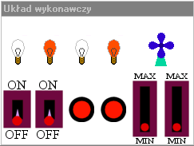
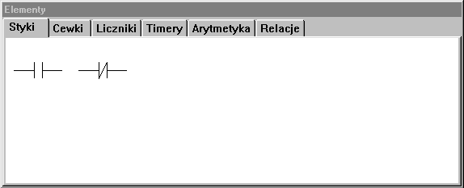
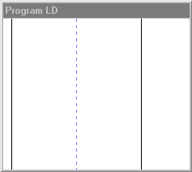

|
Strona tytu³owa
Opis rozkazów
Styki
Cewki
Liczniki
Timery
Operacje arytmetyczne
Relacje
Opis lekcji
Lekcja 1 Wprowadzenie
|
Lekcja 1WprowadzenieJeœli jeszcze nigdy nie spotka³eœ siê ze sterownikiem PLC, na pewno zastanawiasz siê, co to takiego. Jak zapewne wiesz jeszcze do niedawna wszystkie linie produkcyjne, czy procesy technologiczne sterowane by³y przez uk³ady przekaŸnikowe. Wszechobecne szafy z przekaŸnikami mia³y jednak wiele wad. Styki przekaŸników z czasem ulega³y uszkodzeniom, a ich koszt nie by³ ma³y. Jakakolwiek zmiana w sterowaniu procesem musia³a byæ uwzglêdniona przez ponowne zaprojektowanie uk³adu przekaŸników. No i ostatecznie rozmiar - nie by³y to uk³ady ma³e. Wraz z popularyzacj¹ techniki cyfrowej pojawi³y siê uk³ady zastêpuj¹ce szafy z przekaŸnikami. W³aœnie takim uniwersalnym uk³adem jest sterownik PLC (Programmable Logic Controller - Programowalny Sterownik Logiczny). Jak taki sterownik wygl¹da? Oto jeden z modeli oferowanych przez firmê GeFanuc: Jest to sterownik w wersji Micro, tzn. w jednej obudowie zawiera uk³ady wejœcia/wyjœcia, procesor itp. i jest zdolny do samodzielnej pracy. Bardziej zaawansowane sterowniki maj¹ budowê modu³ow¹ - montuje je siê na specjalnej ramce zawieraj¹cej linie transmisji danych, w któr¹ wpina siê potrzebne czêœci. Jeœli potrzeba nam np. 30 wejœæ, a dostêpne mamy modu³y po 10 wejœæ ka¿dy, to mo¿na wpi¹æ 3 takie modu³y i po odpowiednim skonfigurowaniu korzystaæ z nich bez ¿adnego k³opotu.
Niniejszy program stawia sobie szczytny cel nauczenia Ciê programowania sterowników PLC. Ale nie bój siê! Jest to prostsze ni¿ siê wydaje. Po lewej stronie znajduje siê schemat uk³adu przekaŸnikowego, a po prawej jego odpowiednik w jêzyku drabinkowym. Podobieñstwo widaæ od rêki. Przyjrzyjmy siê teraz programowi do nauki. Nie zamykaj okna z pomoc¹, tylko prze³¹cz siê na okno programu i wybierz z menu Lekcje opcjê Lekcja 1, a nastêpnie wróæ do przegl¹darki z pomoc¹. Oczom naszym ukazuj¹ siê trzy okna. Omówiê funkcjê ka¿dego z nich. W oknie zatytu³owanym "Uk³ad wykonawczy" widaæ elementy pod³¹czone do sterownika. W lekcji pierwszej s¹ to ¿arówki, wentylator, prze³¹czniki, przyciski i potencjometry, w lekcjach kolejnych bêdzie to basen, pralka, fabryka oran¿ady i winda. Na niektóre elementy mo¿na wp³ywaæ myszk¹. Spróbuj np. klikn¹æ kilka razy na pierwszym z lewej prze³¹czniku. W kolejnych krokach bêdziemy tworzyæ programy steruj¹ce ka¿dym z tych elementów. PrzejdŸmy teraz do drugiego okna: W tym oknie znajduj¹ siê elementy, które mo¿na u¿yæ przy programowaniu sterownika. Nazywaæ je bêdziemy równie¿ rozkazami lub funkcjami. Wszystkie rozkazy s¹ posegregowane wed³ug spe³nianych funkcji. Klikaj¹c na zak³adkach (Styki, Cewki, Liczniki itd.) mo¿na obejrzeæ wszystkie dostêpne elementy. Nie obawiaj siê ich iloœci, bo wiêkszoœæ z nich spe³nia podobne funkcje. Jeœli w trakcie programowania chcia³byœ dowiedzieæ siê czegoœ o jakimœ elemencie, mo¿esz klikn¹æ na nim prawym przyciskiem myszy i wybraæ "pomoc". Twoim oczom uka¿e siê opis dzia³ania elementu. Ostatnim oknem jest: Jak na razie nie przedstawia siê zbyt atrakcyjnie, ale jest to niejako najwa¿niejsze z wszystkich trzech okien. To w nim bêdzie powstawa³ nasz program dla sterownika. Czarna pionowa linia z lewej strony to "zasilanie", a czarna z prawej to "masa". Pomiêdzy nimi znajduje siê niebieska przerywana linia oddzielaj¹ca elementy logiczne od cewek. Nie martw siê, jeœli coœ z tego nie rozumiesz - wszystko wyklaruje siê po drodze. Kliknij tutaj aby przejœæ dalej. |